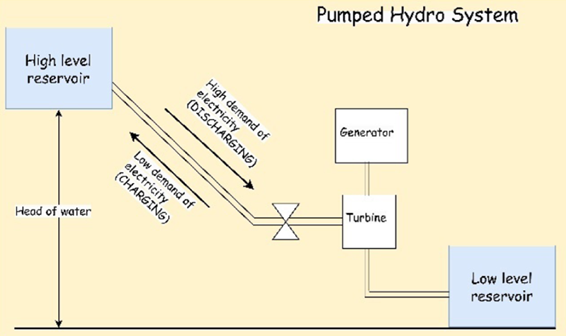
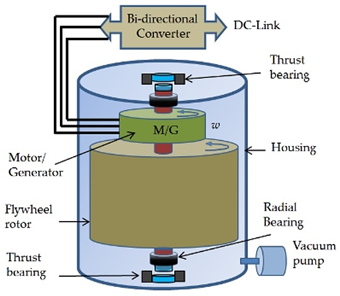
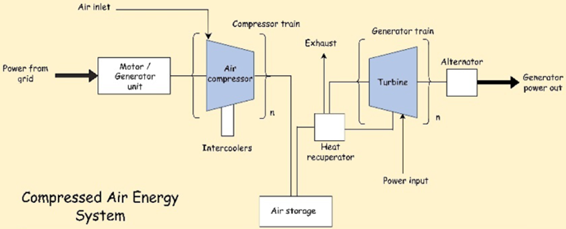
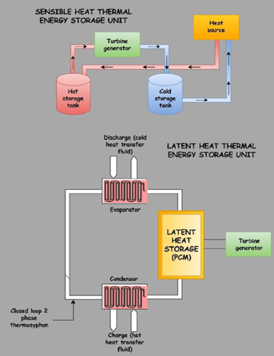
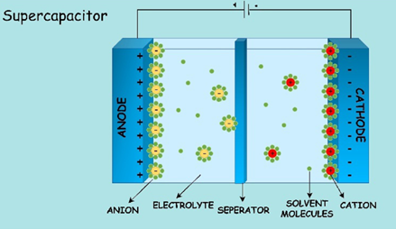
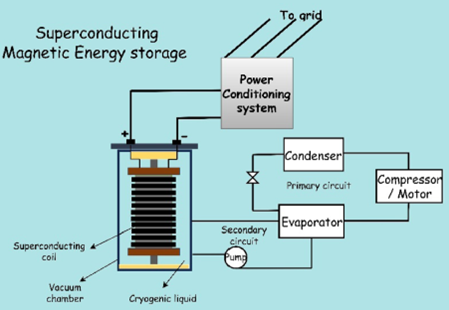
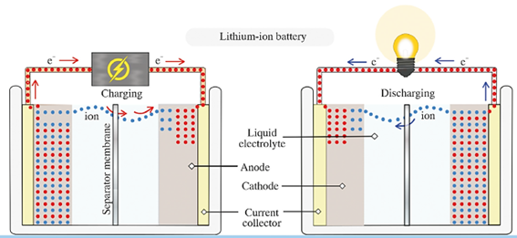
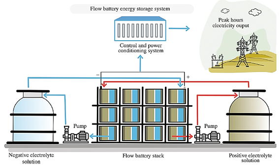

CAPÍTULO 4 SISTEMAS DE ARMAZENAMENTO DE ENERGIA
Na geração diária há picos de consumo de energia ao longo do dia que deveriam ser cobertos, seria necessário um superdimensionamento das plantas para produzir toda a energia no momento em que se consome. Estas plantas não poderiam ser projetadas com energias alternativas. As energias renováveis ou alternativas possuem a desvantagem da impossibilidade de programar a produção de energia conforme os ciclos de consumo da mesma, desta forma há a necessidade de armazenar esta energia para o posterior armazenamento. Apenas as usinas de geração de energia que usam combustíveis não renováveis poderiam suprir tal demanda.
O propósito fundamental da energia, para que seja útil, é estar disponível quando necessário. Por exemplo, a energia presente nas ligações químicas dos combustíveis fósseis pode ser rapidamente transformada em outras formas de energia, enquanto a energia térmica seja facilmente dissipada. Além disso, uma clara vantagem dos combustíveis fósseis é que eles estão sempre concentrados em depósitos localizados, de onde podem ser extraídos. Uma grande desvantagem das energias renováveis é que elas dependem dos fluxos naturais de suas fontes, de modo que sua produção muitas vezes não se ajusta ao momento da necessidade. É aqui que o armazenamento de energia se torna importante para maximizar o uso da geração de energia renovável.
Outra característica muito importante do armazenamento de energia não é apenas a capacidade que ele pode armazenar, mas também o período de tempo durante o qual a energia pode ser armazenada até ela ser utilizada, idealmente sem degradação ou perda, já que esses fenômenos indesejáveis ocorrem em muitos ambientes. A escolha do tipo de armazenamento pode ser baseada nos seguintes fatores:
Fator social: o impacto que o sistema de armazenamento poderia ter sobre as pessoas ao seu redor ou aquelas que consumirão a energia posteriormente.
Fator econômico: o preço por kWh do sistema de armazenamento e o preço por kWh do sistema de transformação.
Fator ambiental: efeitos causados ao meio ambiente, seja pela sua fabricação, seja pela sua operação e instalação.
Fator de energia: Desempenho do dispositivo de armazenamento, vida útil do sistema (número de ciclos de carga e descarga), utilização do sistema, quantidade de energia necessária para armazenamento e armazenamento de curto ou longo prazo.
Assim, podem ser indicados os seguintes tipos de sistemas de armazenamento:
Armazenamento mecânico
Armazenamento térmico
Armazenamento biológico
Armazenamento químico e eletroquímico
4.1 Armazenamento Mecânico
No armazenamento mecânico, as principais opções são: armazenamento de energia por bombeamento hidráulico, armazenamento de ar comprimido e armazenamento por volante de inercia. A continuação segue estes principais tipos de forma detalhada:
4.1.1 Bombeio hidráulico (Pumped hydro energy storage - PHS)
O Armazenamento de Energia Hidrelétrica Bombeada utiliza energia potencial (gravitacional) para estocar energia transferindo água entre dois reservatórios em diferentes graus de elevação. Durante alta produção/baixa demanda, a água é bombeada do reservatório de nível baixo para o reservatório de nível alto (carregamento) e armazenada lá. Durante baixa produção/alta demanda, a água armazenada é liberada do reservatório superior para gerar eletricidade [13]. Este sistema reversível inclui reservatórios, turbinas de bombeamento, motores-geradores e fluxo de água controlado por comportas e acionamentos de velocidade variável [14]. O fluxo de água é regulado por meio do controle de comportas e acionamentos de velocidade variável regulam o carregamento para a potência de saída variável. Os sistemas PHS são classificados em sistemas de circuito aberto (usando corpos d’água naturais) e circuito fechado (com reservatórios artificiais). Eles exigem condições geográficas específicas, como diferenças de altura e fontes de água confiáveis para implementação, conforme Figura 4.1 [15].

Figura 4.1: Bombeamento hidráulico. [15]
4.1.2 Volante de inercia (Flow energy storage - FESS)
O volante de inercia é um elemento que armazena energia na forma de energia cinética rotacional, que será liberada quando necessário. Os Sistemas de Armazenamento em volantes de inercia armazenam energia como energia cinética por meio do movimento rotacional de um volante por meio de mancais magnéticos, unidades motoras/geradoras, câmaras de vácuo e sistemas de condicionamento de energia [16, 17].
O motor estimula o volante a acelerar e converter energia elétrica em energia cinética para o mecanismo de armazenamento durante o modo de carga, mas, por outro lado, o próprio volante desacelera e transforma parte dessa energia cinética em eletricidade quando está descarregando. Para ambientes de vácuo, isso minimiza as perdas de energia resultantes do atrito e da resistência do ar. A resiliência e a eficiência da densidade de energia operacional do FESS dependem predominantemente da velocidade de rotação e da resistência dos materiais dos volantes, com materiais avançados como compósitos de fibra de carbono e mancais magnéticos, permitindo velocidades de rotação mais elevadas e perdas reduzidas, conforme Figura 4.2 [15].

Figura 4.2: Principais componentes de um volante de inercia. [18]
4.1.3 Armazenamento de energia usando ar comprimido (Compressed air storage - CAES)
O armazenamento de energia por ar comprimido (CAES) é um sistema de armazenamento de larga escala usado para armazenar energia por meio de ar comprimido, que é posteriormente expandido usando turbinas para gerar eletricidade. Alta capacidade, resposta rápida e aplicações como nivelamento de carga, estabilização da rede e fácil integração de energia renovável são alguns pontos positivos deste sistema, que permite que a energia seja armazenada fora do horário de pico e liberada durante os horários de pico de demanda [19].
Os sistemas convencionais de armazenamento de energia por ar comprimido (CAES) consistem em compressores, reservatórios de armazenamento (por exemplo, cavernas ou tanques subterrâneos) e turbinas, vide Figura 4.3. Configurações avançadas incorporam recuperadores, aumentando a eficiência geral em aproximadamente 10–15%. Os sistemas CAES normalmente apresentam uma eficiência energética de cerca de 70%, uma vida útil operacional de até 40 anos e capacidades de armazenamento variando entre 35 MW e 300 MW [20]. As aplicações do CAES incluem redução de picos, regulação de frequência e suavização de energia renovável, especialmente para parques eólicos offshore. No entanto, os desafios incluem restrições geológicas (por exemplo, cavernas de sal), altos custos iniciais, perda de água e eficiência de ida e volta relativamente baixa [21].

Figura 4.3: Esquema de Armazenamento de energia usando ar comprimido. [15]
4.2 Armazenamento Térmico (Thermal Energy Storage Systems – TESS)
Os Sistemas de Armazenamento de Energia Térmica (TESS) são projetados para armazenar calor ou frio para uso posterior, utilizando tanques isolados, meios de transferência de calor e sistemas de controle. A energia é armazenada como calor sensível ou calor latente, ou por meio de reações termoquímicas reversíveis, com base nas necessidades de temperatura, fase e potência. As aplicações dos TESS abrangem os setores industrial e doméstico, auxiliando no aquecimento e resfriamento de ambientes, na produção de água quente, na geração de eletricidade e na transferência de carga [22]. Categorizados como sistemas de baixa temperatura (por exemplo, criogênicos) e de alta temperatura (por exemplo, sais fundidos), os TESS oferecem suporte a soluções de energia sustentável, como em sistemas solares fotovoltaicos e recuperação de calor residual. Apesar dos desafios, sua versatilidade e custo-benefício o tornam uma tecnologia vital para as demandas energéticas modernas [23].
4.2.1 Armazenamento de calor sensível (Sensible Heat Storage - SHS)
O armazenamento de calor sensível (SHS) retém energia alterando a temperatura de um meio, como água, sais fundidos ou concreto, sem mudança de fase. Sua capacidade de armazenamento varia em relação ao calor específico, à massa e à faixa de temperatura do meio. Esses sistemas são simples, econômicos e amplamente utilizados em aplicações como aquecimento de ambientes, processos industriais e usinas solares térmicas. Os sistemas SHS são categorizados com base no meio de armazenamento [15].
4.2.2 Armazenamento de calor latente (Latent Heat Storage systems - LHS)
Os sistemas de armazenamento de calor latente apresentado na Figura 4.4, por outro lado, utilizam materiais de mudança de fase (phase change materials - PCMs) para armazenar e liberar energia durante a transição de fase, como mudanças de sólido para líquido. Os PCMs oferecem maior densidade energética, operando eficientemente em temperaturas quase constantes. Esses sistemas são compactos e ideais para aplicações que necessitam de estabilidade térmica, incluindo aquecimento e resfriamento de edifícios, produção de água quente e recuperação de calor industrial. Os PCMs são categorizados como orgânicos, como parafina, ou inorgânicos, como hidratos de sal, com cargas metálicas, frequentemente melhorando o desempenho. Juntos, esses sistemas atendem a diversas necessidades energéticas [24].

Figura 4.4: Representação esquemática simplificada de sistemas de armazenamento de calor sensível e armazenamento de calor latente [15]
4.2.3 O armazenamento subterrâneo de energia térmica (Underground Thermal Energy Storage - UTES)
É uma forma de armazenamento de energia que oferece potencial para economia de energia e sinergia com a produção de fontes de energia renováveis. Os tipos anteriores de armazenamento estão localizados acima do solo e podem até ser transportados. No entanto, é possível armazenar energia térmica no subsolo (fria ou quente) devido à alta capacidade calorífica do subsolo e seu bom isolamento. Isso permite que a energia seja armazenada por longos períodos, chegando a vários meses. Um exemplo seria o armazenamento de calor devido à alta radiação no verão para uso no inverno, ou o exemplo oposto, o armazenamento a frio no inverno para uso no verão para resfriamento. Os tipos de solo incluem areia, arenito, argila, cascalho, etc. [25]
4.3 Sistemas de Armazenamento de Energia Elétrica
Sistemas de Armazenamento de Energia Elétrica (Electrical Energy Storage System - EESS) são tecnologias avançadas que armazenam energia diretamente em um campo elétrico ou magnético, sem conversão em outra forma de energia. Os EESS são divididos em duas categorias, dependendo do meio de armazenamento: Sistemas de Armazenamento de Energia Eletrostática, incluindo capacitores e supercapacitores [26], e Armazenamento de Energia Magnética Supercondutora [27].
- Capacitores e supercapacitores: Capacitores retêm energia elétrica dentro de um campo eletrostático, consistindo em duas placas condutoras separadas por um meio dielétrico, como cerâmica ou polímero, que impede o contato elétrico e permite o acúmulo de carga. A capacitância depende do tamanho da placa, da distância de separação e da constante dielétrica. A baixa densidade de energia limita o uso em larga escala, limitando seu uso a aplicações de pequena escala, como circuitos de controle de potência [26]. A figura 4.5 apresenta um esquema dos capacitores e supercapacitores. Supercapacitores, também chamados de ultracapacitores ou capacitores elétricos de dupla camada (EDLCs), abordam as limitações dos capacitores convencionais usando eletrodos de carvão ativado com grande área de superfície, separados por uma barreira eletrolítica. Este projeto atinge densidades de energia significativamente maiores, em torno de 5 Wh/kg, em comparação com <0,01 Wh/kg dos capacitores tradicionais [28]. Eles oferecem mais de 500.000 ciclos e uma vida útil de 12 anos. Estudos de novos materiais, como grafeno e nanotubos de carbono (NTCs), buscam aprimorar a densidade energética e o desempenho dos supercapacitores [27].

Figura 4.5: Tipos de sistemas de armazenamento de energia elétrica: supercapacitores. [15]
- Armazenamento de energia magnética supercondutora: Este sistema armazena energia elétrica como um campo magnético gerado por corrente contínua (CC) que passa por bobinas supercondutoras. As bobinas, tipicamente são feitas de filamentos de nióbio-titânio (NbTi) e apresentam zero de resistência elétrica quando resfriadas a temperaturas inferiores ao seu nível crítico, tipicamente a –270 ◦C. Estes sistemas são compostos por quatro componentes principais: o ímã supercondutor, o sistema de refrigeração criogênica, o sistema de condicionamento de energia e o sistema de controle. Vide Figura 4.6. O ímã, mantido dentro de uma câmara isolada a vácuo, é resfriado a temperaturas criogênicas com hélio líquido ou nitrogênio [108]. Os Supercapacitors and Superconducting Magnetic Energy Storage - SMES também apresentam uma alta taxa de autodescarga, de aproximadamente 10 a 15% ao dia, e são suscetíveis a variações de temperatura, o que pode influenciar seu desempenho. [29]

Figura 4.6: Supercapacitores e armazenamento de energia magnética supercondutora – SMES. [15]
4.4 Sistemas de Armazenamento de Energia Eletroquímica (Electro - Chemical Energy Storage Systems - ECES)
Os sistemas de Armazenamento Eletroquímico de Energia (ECES) são dispositivos que convertem energia química em energia elétrica e vice-versa por meio de reações eletroquímicas. Comumente utilizados devido à sua alta eficiência, baixa necessidade de manutenção e flexibilidade nas aplicações. Eles oferecem escalabilidade e são capazes de armazenar grandes quantidades de energia, tornando-os essenciais para aplicações em escala de rede, bem como para aplicações menores. No entanto, questões como altos custos em sistemas de larga escala, redução da vida útil devido à profundidade de descarga (DoD) e redução da eficiência do ciclo se apresentam como as principais desvantagens. [30]
Os Sistemas de Armazenamento de Energia de Bateria (BESS) são uma subcategoria significativa de ECES. Cada célula de bateria tem três elementos principais, como um ânodo, um cátodo e um eletrólito, que permitem o movimento de elétrons durante o carregamento e o descarregamento. As baterias são normalmente classificadas como primárias e secundárias. As baterias primárias são de uso único e não recarregáveis, enquanto as baterias secundárias dependem de reações eletroquímicas reversíveis e podem ser recarregadas várias vezes. Os tipos comuns de baterias secundárias incluem chumbo-ácido, íon-lítio (Li-ion), níquel-cádmio (NiCd), sódio-enxofre (NaS) e baterias de fluxo [31].
Baterias de chumbo-ácido, entre as tecnologias de baterias mais antigas, apresentam cátodos de dióxido de chumbo, ânodos de chumbo e ácido sulfúrico como eletrólito. Conhecidas por sua acessibilidade e confiabilidade, essas baterias são frequentemente usadas em sistemas de energia de reserva e aplicações automotivas [32].
As baterias de íons de lítio (Li-ion), Figura 4.7, são a principal tecnologia de armazenamento de energia devido à sua alta densidade energética (80–200 Wh/kg), ciclo de vida prolongado e tempos de resposta rápidos. Essas baterias operam facilitando a transferência reversível de íons de lítio entre um ânodo à base de grafite e um cátodo feito de óxido metálico de lítio por meio de um eletrólito [33]. No entanto, as baterias de íons de lítio estão associadas a desafios, incluindo custos de produção elevados (US$ 900–1300/kWh), vulnerabilidade à fuga térmica e a necessidade de mecanismos sofisticados de segurança e proteção [34]. Além disso, um Sistema de Gerenciamento Térmico de Bateria (BTMS) eficaz é fundamental para mitigar o aumento excessivo de temperatura em baterias de íons de lítio. [33, 34]

Figura 4.7: Funcionamento das baterias ions de Litio. [35]
As baterias de fluxo (Flow battery energy storage system - FBES) consomem dois eletrólitos que são armazenados em tanques externos separados (Figura 4.8) e há uma membrana microporosa que separa ambos os eletrólitos, mas permite que apenas íons selecionados passem por ela, produzindo corrente [36]. Os sistemas FBES são classificados em dois tipos: bateria de fluxo de redução-oxidação (redox) e bateria de fluxo híbrida. Em baterias de fluxo redox, todos os materiais eletroativos são dissolvidos em um eletrólito líquido, enquanto em baterias de fluxo híbridas, um ou mais materiais eletroativos são depositados no eletrólito [37]. Existem principalmente três tipos de FBES de grande escala que são usados, conforme resumido nas seguintes subseções: Baterias de fluxo de zinco-bromo (ZnBr), Baterias redox de vanádio (VRBs) e Baterias de fluxo de brometo de polissulfeto (PSB).

Figura 4.8: Diagrama esquemático do sistema de armazenamento de energia de bateria de fluxo (FBES). [35]